Task 3: Deploy BGP VPN
Task 3: Inter-AS Option A (Full East-West Connectivity)¶
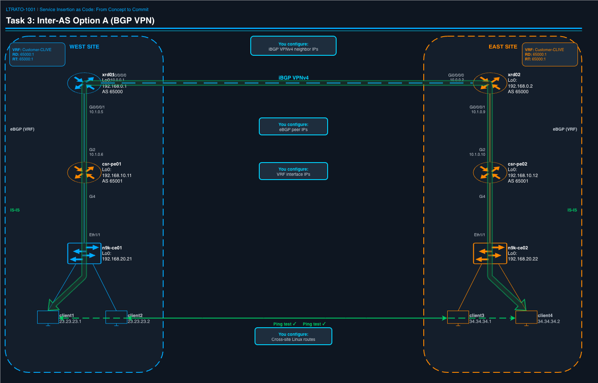
Objective¶
Configure Inter-AS Option A so that west-side clients (1, 2) can reach east-side clients (3, 4) across the full SP core. This is the most complex task — it touches all 4 platforms and introduces BGP, VRFs, and route redistribution.
Before Task 3: - Client1 can reach Client2 and csr-pe01, but NOT Client3/4 - Client3 can reach Client4 and csr-pe02, but NOT Client1/2
After Task 3: - Full east-west: Client1 pings Client3, Client2 pings Client4 - Traffic path: Client1 → N9K-CE01 → CSR-PE01 → XRd01 → XRd02 → CSR-PE02 → N9K-CE02 → Client3
Why Inter-AS Option A?¶
Right now, each side of the network is isolated. The CSR PEs know about their local clients via IS-IS, but there's no mechanism to carry those routes across the SP core (xrd01 ↔ xrd02). Client1 can ping csr-pe01, but not client3.
Inter-AS Option A solves this with three components working together:
1. VRFs (Virtual Routing and Forwarding)¶
A VRF is like a separate routing table inside a router. The XRd core routers
run both SP infrastructure traffic (IS-IS, MPLS, management) and customer
traffic — these must be isolated. The VRF named Customer-CLIVE creates a
dedicated routing table for customer traffic.
When we assign Gi0/0/0/1 (the link to the CSR PE) to the VRF, that interface moves out of the global routing table and into the VRF's table. The CSR PE routes are only visible inside the VRF — they don't leak into the SP core's IS-IS topology. This is how real SPs keep thousands of customers isolated on shared infrastructure.
2. MP-BGP VPNv4 (iBGP between XRd routers)¶
The iBGP VPNv4 session carries VRF routes across the SP core between xrd01 and xrd02. "VPNv4" means each IPv4 prefix is prepended with a Route Distinguisher (RD), making it globally unique in the BGP table — even if two customers use the same IP address space. Which VRFs actually import those routes is controlled by Route Targets (RT), configured below.
This session uses Loopback0 addresses (192.168.0.1 ↔ 192.168.0.2),
which are reachable via the pre-configured IS-IS/MPLS core. Using loopbacks
instead of link IPs makes the BGP session resilient — if one physical link
goes down, MPLS can reroute traffic to reach the same loopback.
Route Targets (RT) control which VRFs import which routes. In our lab,
both XRd routers use 65000:1 for import and export, so VRF routes from
xrd01 are imported into xrd02's VRF and vice versa.
3. eBGP at the PE Edge¶
Each XRd router peers with its local CSR PE via eBGP inside the VRF: - xrd01 (AS 65000) ↔ csr-pe01 (AS 65001) - xrd02 (AS 65000) ↔ csr-pe02 (AS 65001)
The CSR PEs redistribute IS-IS routes into BGP (so client subnets get advertised), and BGP routes back into IS-IS (so remote subnets become reachable locally). This two-way redistribution is the glue that connects the eBGP edge to the VPNv4 core.
Key concept — as-override: Both CSR PEs are in AS 65001. When xrd01
receives a route from csr-pe01 (AS path: 65001), it carries it via iBGP to
xrd02, which tries to advertise it to csr-pe02. But csr-pe02 sees AS 65001
already in the path — BGP loop prevention says "I'm in AS 65001, this route
has already been through AS 65001, drop it." The as-override command on the
XRd routers' eBGP sessions toward the CSR PEs replaces any occurrence of
AS 65001 in the AS-path with the XRd's own AS (65000) before advertising,
bypassing this check. This is a standard SP technique when multiple PE sites
share the same AS number.
The Big Picture¶
Here's the complete data flow when client1 pings client3:
client1 (23.23.23.1) → n9k-ce01 SVI (23.23.23.254) ← static route via SVI gateway → csr-pe01 (IS-IS route) ← IS-IS learned this route from the CE → xrd01 VRF (eBGP from CSR) ← eBGP brings it into the VRF → xrd02 VRF (iBGP VPNv4) ← VPNv4 carries it across the core → csr-pe02 (eBGP from XRd) ← eBGP pushes it to the remote CSR → n9k-ce02 SVI (IS-IS route) ← IS-IS redistributes it locally → client3 (34.34.34.1) ← arrives at destination
Every layer you configured (VLANs, IS-IS, BGP, VRF, static routes) plays a role in this path. Remove any one, and the packet can't get through.
Exercise: Complete the Playbook¶
This playbook has three plays with variables — the most complex one yet. Open it:
Take a moment to scroll through the entire playbook before editing. You'll notice it has 6 plays total: 3 config plays, a convergence pause, and 2 verification/test plays. The TODO placeholders are only in the first 3 plays.
Play 1 — XRd Core Routers (VRF + BGP)¶
Scroll to the first vars: section:
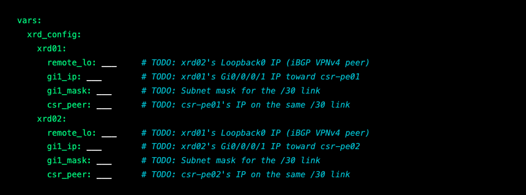
Using Table 2 and Table 3, fill in:
| Variable | Hint | Where to Find It |
|---|---|---|
remote_lo for xrd01 |
xrd02's Loopback0 IP | Table 2, xrd02 Loopback0 row |
remote_lo for xrd02 |
xrd01's Loopback0 IP | Table 2, xrd01 Loopback0 row |
gi1_ip for xrd01 |
xrd01's IP on Gi0/0/0/1 | Table 2, xrd01 Gi0/0/0/1 row |
gi1_ip for xrd02 |
xrd02's IP on Gi0/0/0/1 | Table 2, xrd02 Gi0/0/0/1 row |
gi1_mask (both) |
Subnet mask for /30 | Always 255.255.255.252 for /30 |
csr_peer for xrd01 |
csr-pe01's IP toward xrd01 | Table 2, csr-pe01 Gi2 row |
csr_peer for xrd02 |
csr-pe02's IP toward xrd02 | Table 2, csr-pe02 Gi2 row |
Understanding the relationships: Each XRd router needs to know two things: (1) its iBGP VPNv4 peer (
remote_lo— the other XRd's loopback, reachable via the pre-configured IS-IS/MPLS core), and (2) its eBGP peer (csr_peer— the CSR PE on the same /30 link). These are two completely different BGP sessions serving different purposes.Why IPs and not hostnames? BGP peering requires exact IP addresses. The iBGP session uses loopback IPs (stable, doesn't go down if a single link flaps). The eBGP session uses directly-connected link IPs (so the TCP session follows the physical path).
Play 2 — CSR PE Routers (eBGP)¶
Scroll to the second vars: section:
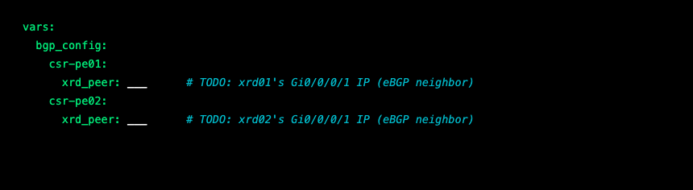
Using Table 3, fill in:
| Variable | Hint | Where to Find It |
|---|---|---|
xrd_peer for csr-pe01 |
xrd01's Gi0/0/0/1 IP | Table 2, xrd01 Gi0/0/0/1 row |
xrd_peer for csr-pe02 |
xrd02's Gi0/0/0/1 IP | Table 2, xrd02 Gi0/0/0/1 row |
Cross-check your work: The
csr_peeryou entered in Play 1 for xrd01 and thexrd_peerhere for csr-pe01 are two ends of the same link. They should be different IPs on the same /30 subnet. For example, if xrd01'scsr_peeris10.1.0.6, then csr-pe01'sxrd_peershould be10.1.0.5(the other end). If these don't match, the eBGP session won't establish.
Play 3 — Linux Client Cross-Site Routes¶
Scroll to the third vars: section:
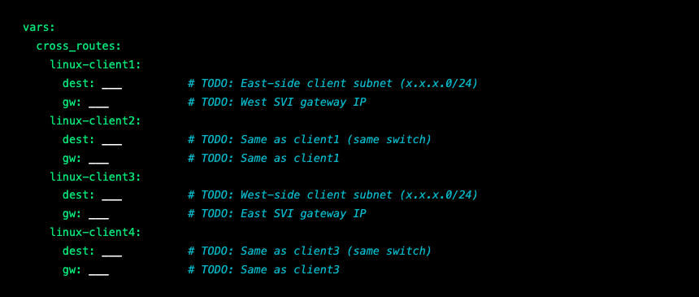
Using Table 2, fill in:
| Variable | Hint | Where to Find It |
|---|---|---|
dest for client1/2 |
The remote client subnet (east side) | Client3/4 are on 34.34.34.0/24 |
dest for client3/4 |
The remote client subnet (west side) | Client1/2 are on 23.23.23.0/24 |
gw for client1/2 |
West-side SVI gateway (no mask) | Same as Task 2 gateway |
gw for client3/4 |
East-side SVI gateway (no mask) | Same as Task 2 gateway |
Why do we need these routes? In Task 2, we gave clients routes to reach their local PE. But now traffic needs to cross the entire SP core. West clients need a route to the east client subnet (and vice versa). The SVI gateway handles the forwarding — it sends the traffic up to the CSR PE, which uses BGP to reach the other side.
Think about the full path: When client1 (23.23.23.1) pings client3 (34.34.34.1), the packet follows this path:
client1 → n9k-ce01 SVI → csr-pe01 → xrd01 → xrd02 → csr-pe02 → n9k-ce02 SVI → client3That's 6 hops across 4 different platforms — and you're configuring it all from a single Ansible playbook.
Save the file when done.
Ansible Concepts in This Playbook¶
-
cisco.iosxr.iosxr_command— Designed for exec-mode (show) commands, but used here as a workaround to push raw config CLI to XRd. The properiosxr_configmodule relies on internal IOS-XR mechanisms that XRd doesn't fully support. By sendingconfigure terminal, config statements,commit, andendas raw commands, we work around this limitation — at the cost of idempotency detection (the module can't tell if the config already existed). -
IOS-XR commit model — Unlike IOS (where config takes effect immediately), IOS-XR requires an explicit
committo apply changes. This is a safety feature — you can review changes before committing. -
Multiple plays in one playbook — This playbook has 6 plays targeting different device groups. Ansible runs them in order: XRd config → CSR config → Linux routes → convergence pause → verification → testing.
-
ansible.builtin.pause— Waits 90 seconds for BGP sessions to establish and routes to propagate. BGP convergence takes time, especially the iBGP VPNv4 session between XRd routers.
Run It¶
This playbook takes about 4-5 minutes to complete, including a 90-second pause for BGP convergence. Be patient — the pause is there for a reason.
Understanding the Output¶
Play 1 — XRd configuration sets up VRF, MPLS VPN, and BGP:
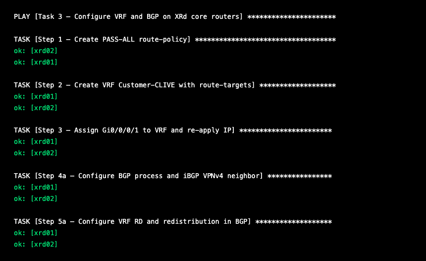
Why do the XRd tasks show
okinstead ofchanged? These tasks useiosxr_command(raw CLI mode) instead ofiosxr_config(declarative mode). The raw module sends commands and checks for errors, but it can't detect whether the config already existed. It reportsokbecause no error occurred. This is a trade-off — the module works reliably with XRd, even though it loses the ability to showchangedstatus.What are all these steps doing? - Step 1 creates a route-policy named
PASS-ALL— it accepts all routes (needed for eBGP) - Step 2 creates a VRF namedCustomer-CLIVEwith route-target import/export - Step 3 moves the PE-facing interface (Gi0/0/0/1) into the VRF and reapplies its IP - Step 4a creates the iBGP VPNv4 session between xrd01 and xrd02 (uses yourremote_lovalue) - Step 5a sets the VRF route-distinguisher and enables route redistribution - Step 5b creates the eBGP session to the CSR PE inside the VRF (uses yourcsr_peervalue)
The verification task shows the complete BGP config on each XRd:
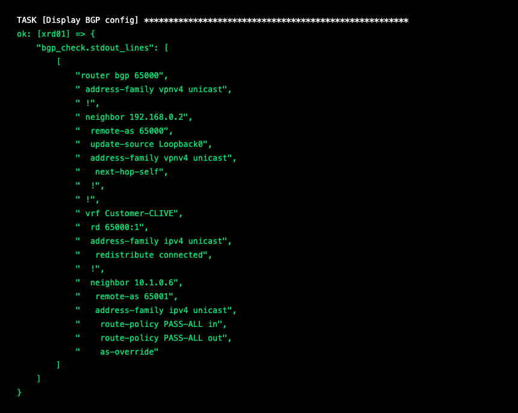
Reading the BGP config: This is the complete
router bgphierarchy on xrd01. Look for: (1)neighbor 192.168.0.2— that's yourremote_lovalue (the iBGP VPNv4 peer), (2)neighbor 10.1.0.6— that's yourcsr_peervalue (the eBGP neighbor inside the VRF), and (3)as-override— without this, BGP would drop routes from AS 65001 when it sees the same AS on the other side (both CSR PEs share AS 65001).
Play 2 — CSR PE configuration sets up eBGP and IS-IS redistribution:
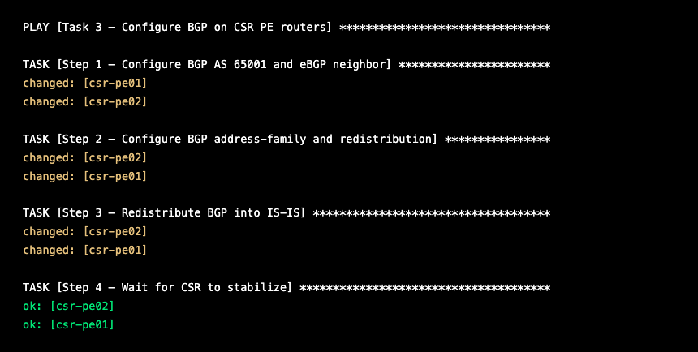
What is route redistribution? The CSR PEs sit between two routing protocols: IS-IS (toward the N9K CE) and BGP (toward the XRd core). Step 2 redistributes IS-IS routes into BGP (so local client subnets get advertised to the remote side), and Step 3 redistributes BGP routes into IS-IS (so remote client subnets become reachable from the local CE switch). This two-way redistribution is what makes end-to-end connectivity possible.
Play 3 — Linux cross-site routes adds the final piece:
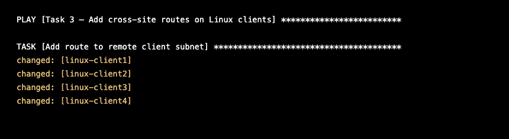
Convergence pause — the playbook then waits for BGP:
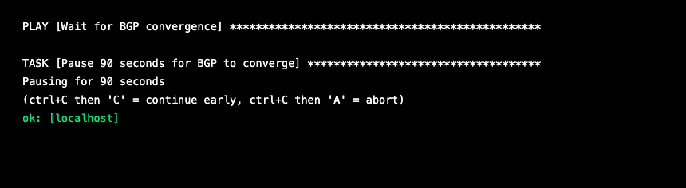
Why 90 seconds? BGP convergence is not instant. The iBGP VPNv4 session between xrd01 and xrd02 needs to: (1) establish the TCP connection, (2) exchange OPEN messages, (3) negotiate capabilities (VPNv4 address-family), (4) exchange UPDATE messages with VPN prefixes, and (5) install routes in the VRF. This process can take 60-90 seconds on virtual routers, especially on a fresh boot. The pause ensures routes are fully propagated before the ping test runs.
Verification plays show BGP session status and learned routes:
Note: On a first run, the iBGP VPNv4 session may still be exchanging prefixes when the verification plays execute. You might see
St/PfxRcd: 0instead of3, and the VRF route table may show only 3 local prefixes instead of 6. This is normal — BGP convergence on virtual routers can take slightly longer than the 90-second pause. If you see this, wait another 30-60 seconds and check manually withssh xrd01 'show bgp vpnv4 unicast summary'. The pings at the end of the playbook are the real validation — if they pass, the routes have propagated.
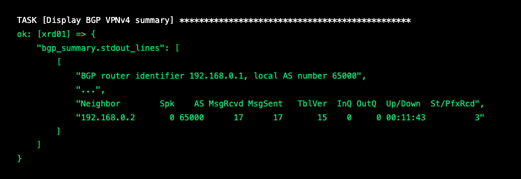
Reading the BGP summary: The key columns are: - Neighbor:
192.168.0.2— the iBGP VPNv4 peer (xrd02's loopback) - Up/Down:00:11:43— the session has been up for 11 minutes (good!) - St/PfxRcd:3— three prefixes received from the peerIf
St/PfxRcdshows a state likeIdleorActiveinstead of a number, the BGP session hasn't established. Check yourremote_lovalues.
The VRF route table shows all learned prefixes:
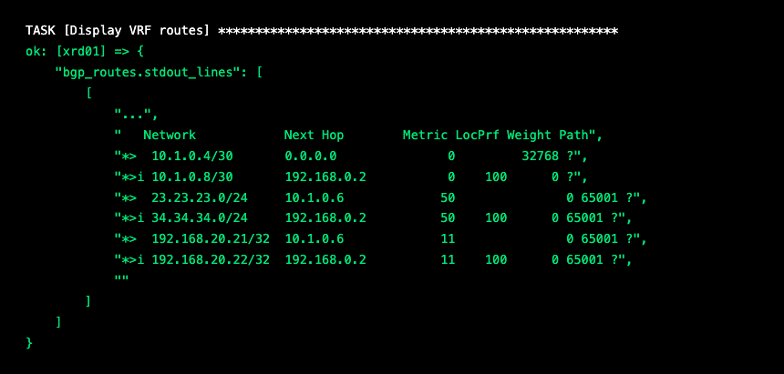
Reading the VRF route table: Each line is a route in the VRF: -
*>= valid, best path selected by BGP -*>i= best path, learned via iBGP (theimeans "internal" — from the other XRd) - Look for both client subnets:23.23.23.0/24(west) and34.34.34.0/24(east) - 6 prefixes is the expected total — if you see fewer, a route isn't propagatingOn xrd01, the west subnet (
23.23.23.0/24) comes from eBGP (via csr-pe01), and the east subnet (34.34.34.0/24) comes from iBGP (via xrd02, which learned it from csr-pe02). This is Inter-AS Option A in action — each side advertises its local routes, and the VPNv4 core carries them across.
The CSR BGP verification confirms eBGP sessions are up:
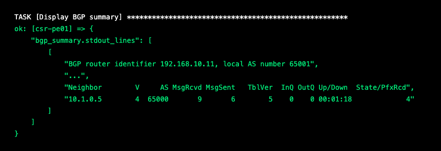
CSR BGP summary: csr-pe01 peers with xrd01 (
10.1.0.5) and has received 4 prefixes. TheState/PfxRcdcolumn showing a number (notIdle/Active) confirms the session isEstablished.
The final ping tests — the moment of truth:
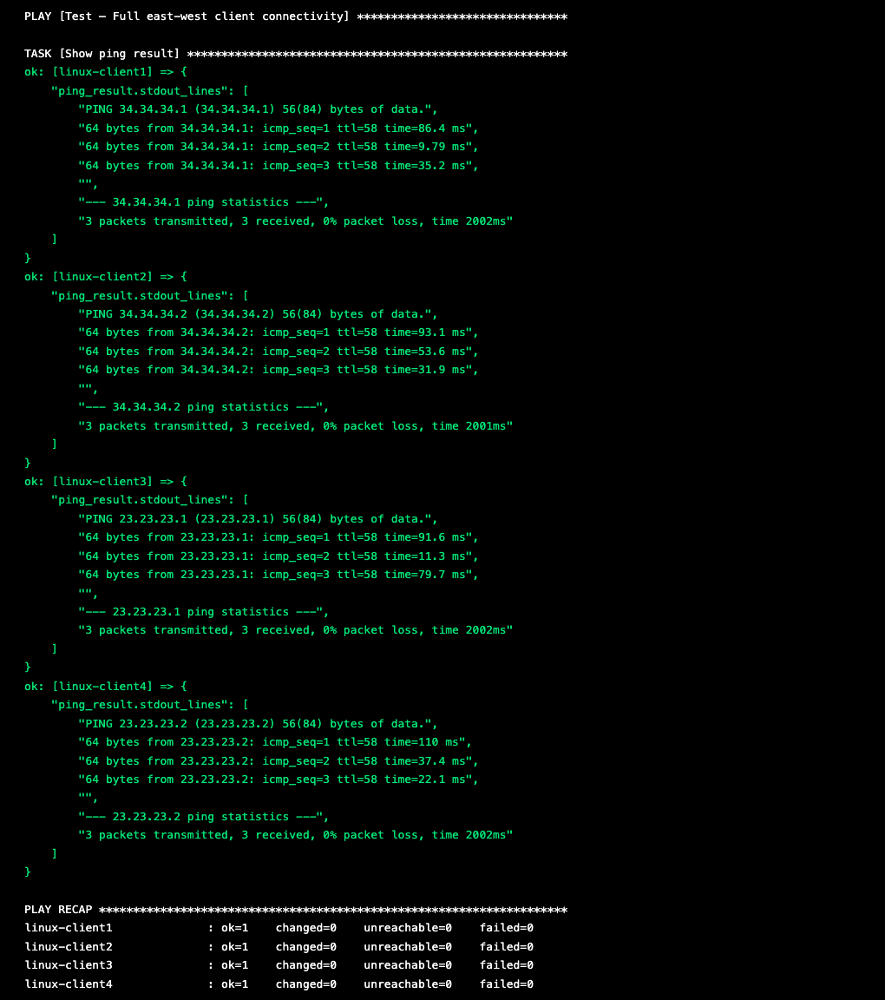
Checkpoint¶
Confirm these results from the playbook output:
- [ ] XRd
show run router bgpdisplays VRF, VPNv4, and eBGP neighbor config - [ ] XRd BGP VPNv4 summary shows 3 prefixes received from the iBGP peer
- [ ] XRd VRF routes show 6 prefixes (both client subnets, both PE-CE links, both loopbacks)
- [ ] CSR BGP summary shows an established session (number in State/PfxRcd, not
Idle/Active) - [ ] client1 → client3 ping: packets received (2/3 or 3/3)
- [ ] client2 → client4 ping: packets received (2/3 or 3/3)
- [ ] client3 → client1 ping: packets received (2/3 or 3/3)
- [ ] client4 → client2 ping: packets received (2/3 or 3/3)
- [ ] PLAY RECAP shows failed=0 for all devices
Congratulations! If all four cross-site pings succeed, you've built full east-west connectivity across a multi-vendor SP network entirely through Ansible automation. Traffic from client1 (23.23.23.1) is now reaching client3 (34.34.34.1) across VLANs, IS-IS, MPLS VPN, and BGP — all configured by code.
Troubleshooting: - If BGP sessions show
IdleorActive: check yourremote_lo,gi1_ip, andcsr_peer/xrd_peervalues. The IPs must match Table 2 exactly. - If BGP is up but shows 0 prefixes: wait another 30-60 seconds. VPNv4 convergence can be slow on virtual routers. - If pings fail but BGP shows prefixes: check that your Linux clientdestandgwvalues are correct, and verify the routes from Task 2 are still in place. - Try running the playbook again — it's fully idempotent. Sometimes a second run with a fresh 90-second pause is all it takes.💡 Automation Insight: Look at your 3 playbooks — they total ~300 lines of YAML. You just built full east-west L3VPN connectivity across 10 devices and 4 platforms. Now imagine onboarding a new customer site: duplicate the variables, change the IPs, run the playbook. That's the real power — the logic never changes, only the data.
Idempotency Check¶
A key property of well-written automation is idempotency — running the same playbook twice produces the same result, with no unintended side effects. This is one of the most important concepts in Infrastructure as Code.
Why Idempotency Matters¶
Imagine you have a playbook that configures 100 routers. It runs at 2 AM as part of a CI/CD pipeline. Halfway through, a network blip causes 10 routers to fail. You fix the blip and re-run the playbook. What happens?
-
Without idempotency: The 90 routers that already have the config get duplicate entries. VLANs get recreated, routes get doubled, interfaces flap unnecessarily. You've made the problem worse.
-
With idempotency: The 90 routers report
ok(no changes needed). The 10 failed routers get configured. Everything converges to the desired state. This is safe, repeatable automation.
See It in Action¶
Re-run the Task 1 playbook:
Compare the output to your first run. Notice the differences:
First run:
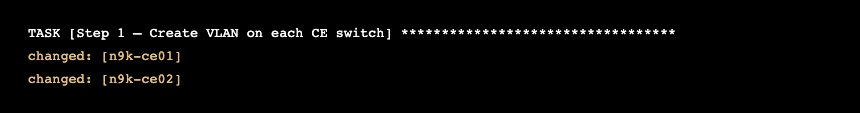
Second run:
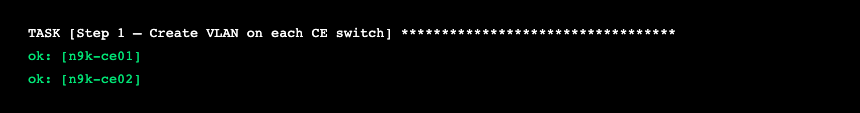
The changed → ok shift means Ansible checked the device, found the VLAN
already exists with the correct config, and made no changes. The PLAY RECAP
will show changed=0 for most devices on the second run.
Exception: Some tasks always show
changedbecause their modules can't detect existing state. Thenxos_configswitchport tasks (Step 2) and Linuxrawcommands always reportchanged. The XRd tasks usingiosxr_commandalways reportok(but for the opposite reason — they can't detect whether they made a change). These are module limitations, not playbook bugs.💡 Automation Insight: You just ran the same playbook twice and nothing broke. That
changed=0output is the most underrated feature in automation. It means you can schedule this playbook to run every hour, and it will silently fix any config drift without touching what's already correct. That's how production teams keep 10,000 devices in compliance.
What This Means for Production¶
In a real environment, idempotent playbooks enable: - Scheduled enforcement — Run the playbook hourly to catch and fix config drift - Safe re-runs — If something fails, just re-run. No need to figure out which parts succeeded and skip them - CI/CD integration — Trigger playbooks on git push, knowing they'll only change what's different - Disaster recovery — After a device replacement, run the full playbook to bring it to the desired state